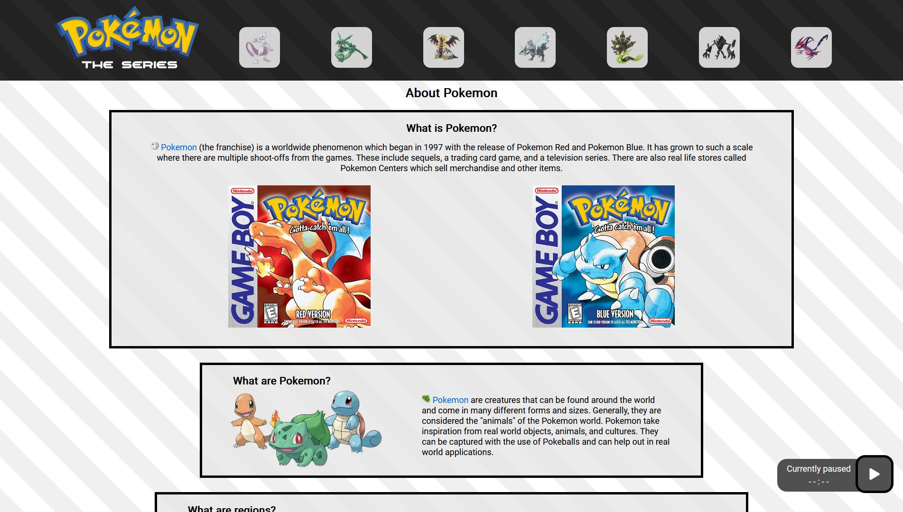
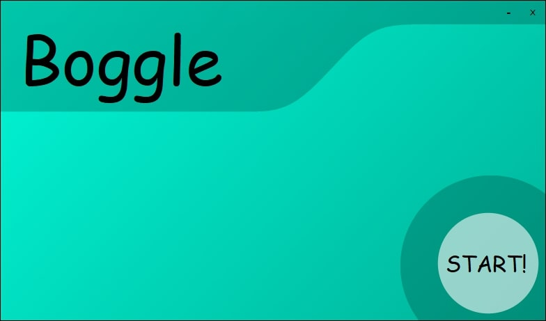
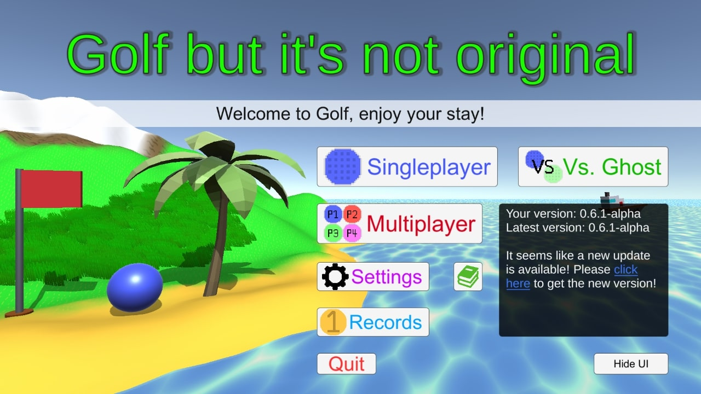
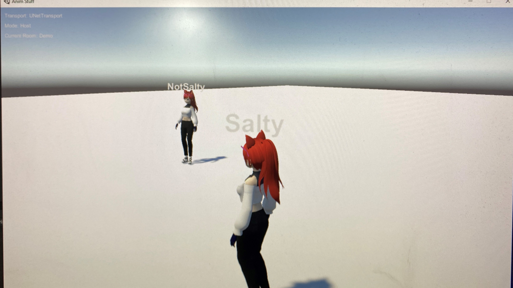
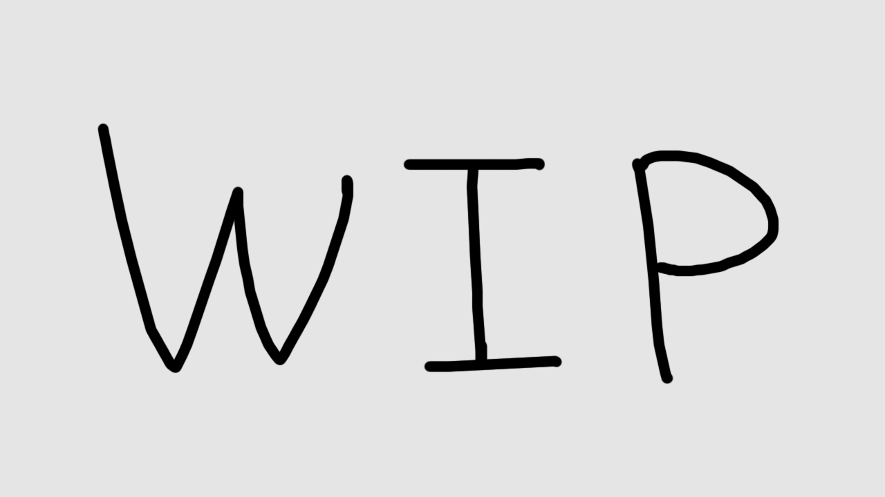

Feel free to call me that (unless mentioned
otherwise). When I'm not crunching the uni life, then you
can find me in Splatoon 3, Honkai: Star Rail, or
lurking in some VTuber's stream (🧟 and 🦚 iykyk).
Over the years, I've designed, developed, and poorly maintained
numerous projects that I'm frankly very proud of.
This is also where this website comes into play, as a personal
playground to learn more about webdev, but also as an easy way to
glance at all the projects I've done.
What have I been doing
A list of my projects
IST Website
2020
A website about a movie/TV show of our choosing. By using HTML, CSS, and JS, I created a website about the Pokemon anime. Modern browser recommended.
Boggle Game
2021
A .NET Visual Basic Application. I created a word/card game which included Card Match and Word Memory. The .NET 4.8 Framework is required.
Golf but its not original
2022
A project of any specification. Using Unity and C#, I created a 2D golf-sim/on-rails/top-down shooter to fulfil my own requirements. Unity 2020.3.12f1 required to open project. Windows PC required to play.
Unity Networking
2022
A minor project in the middle of Golf. I was able to learn more about 3D models, animation, and networking in Unity. This is never getting finished. Unity 2020.3.12f1 required to open project.
Salty's Homepage
2022
The original website. Made with HTML, Bootstrap CSS v5.3.0-alpha1, and JS. To be succeeded by this one. I hope you're using a modern browser.
Various university works
2023
Various projects and assignments assigned while studying Computer Science at university. I would make these open source, but that would be committing academic misconduct. Maybe in 10 years.
Salty's (new) Homepage
2023
The new website. Made with HTML, Tailwind CSS, and JS. The successor to the old website. I still hope you're using a modern browser.
How to find me